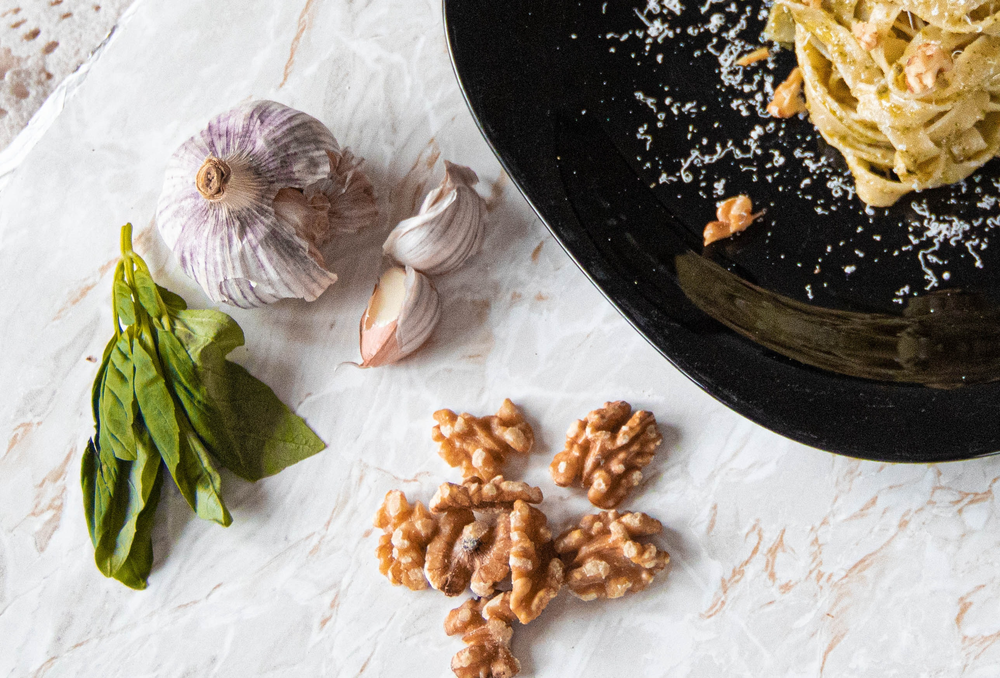

About Us

Our Vision:
Pasta Amore combines the cooking traditions
and ingredients of Italy with creativity,
providing a modern twist on timeless classics.
Our vision for the future is to grow and learn
along with our customers. In doing so, we aim
to provide an atmosphere that enables this
growth and fuels the passion that lives within
the essence of the brand.
The approach of Pasta Amore is to develop
our brand with the understanding of both
our culture and consumer insights. Within
our vision always lives the promise of inspiring
creativity, conversation and quality.